Купцы и их дома являются одним из важнейших пунктов в истории и развитии села Калинино. Именно благодаря купцам населённые пункты в те времена могли развиваться. На данной странице вы можете найти информацию о всех Калининских купеческих домах.
Содержание
Дом Курочкина Афанасия Николаевича 1
Дом Курочкина Афанасия Николаевича 2
Дом Волокитина Василия Амвросиевича
Дом построенный Курочкиным Афанасием Николаевичем для внука Курочкина Алексея Павловича
Дом Пигасова Василия Филипповича
Дом построеный купцом-лесопромышленником Павлом Степановичем Жирновым
Дом Смирнова Фёдора Ивановича
В 1878 году Смирновы основали гончарно-фаянсовую фабрику. В разные годы на ней работало от 10 до 40 рабочих. Впоследствии Смирнов Ф.И. продает свою фабрику, как и дом Мею Г.И. По его фамилии дом до наших дней именуется «Меевский». В 1970е годы в доме располагалась колхозная семенная лаборатория. После пожара был восстановлен только первый кирпичный этаж. В котором сделали многоквартирный дом.
Дом Курочкина Афанасия Николаевича 1
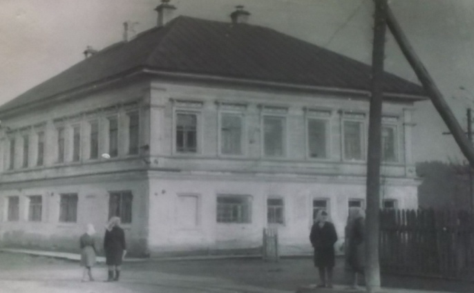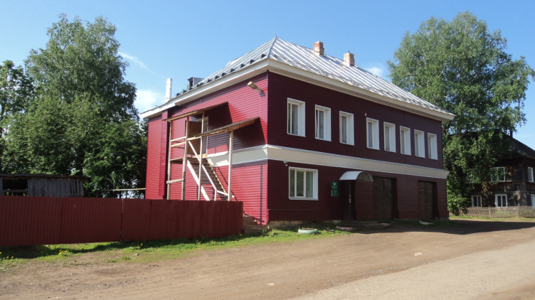
Заложен в 1877 году. После революции 1917 г. как и все купеческие дома, был экспроприирован. С 1940 по 1959гг. в доме размещался райисполком: отделы культуры, просвещения, здравоохранения, соцобеспечения, архивный и финансовый. На первом этаже размещалась типография. С 1959 года интернат Калининского детского дома. С 1994 года сельсовет.
Дом Курочкина Афанасия Николаевича 2
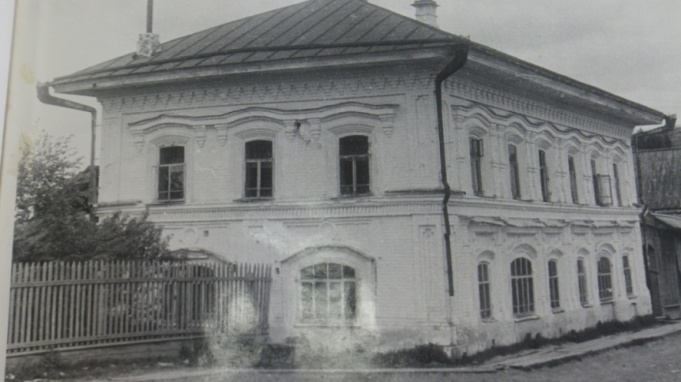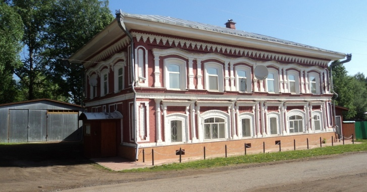
Построен в июле 1889 года. В 1930е годы на первом этаже размещалась детская площадка (детсад). До 1958 года в здании размещался райком партии и райком комсомола. С 1959 года размещался интернат Калининского детского дома. С 2000 года в доме размещен офис кооператива «Темп».
Дом Волокитина Василия Амвросиевича
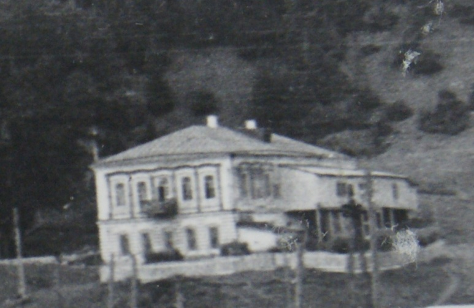
Дом построен в конце 19 века. Волокитин Василий Амвросьевич купец 2 гильдии, занимался торговлей сукна и ситца, водкой и другими товарами. В 1920е годы в здании размещался дом профсоюзов, здание использовалось как клуб.
С 1923 по 1931 размещался райисполком. С 1943г. размещалась редакция газеты «Голос колхозника». С 1941 по 1959 гг.Калининское отделение госбанка. 1941 на первом этаже склад сельпо. С 1959 по 1980е интернат Калининского детского дома. В 1980е швейный цех Кунгурской швейной фабрики.
Дом построенный Курочкиным Афанасием Николаевичем для внука Курочкина Алексея Павловича
С 1968 года по 1971 в левой половине дома размещалась детская музыкальная школа, организованная председателем колхоза им. Калинина Израилом Абрамовичем Талянским.
Дом Балашова Егора Андреевича
Балашов Е.А. имел бакалейную лавку, в доме на 1 этаже держал трактир. У входа, в который находилось чучело медведя. В 1916 на втором этаже находилась квартира земского агронома Дертевой Людмилы Федоровны. В которой собиралась активная молодежь, был организован революционный кружок. В 1900г. в доме обустроен детский приют. Последующие годы на 1этаже изолятор, на 2 этаже квартиры сотрудников.
Дом Ивана Ивановича Грошева
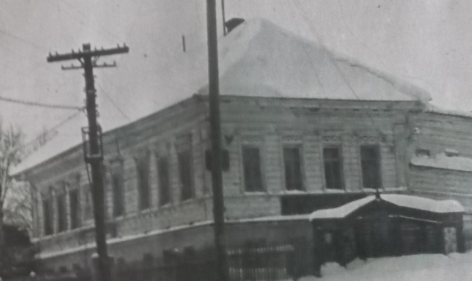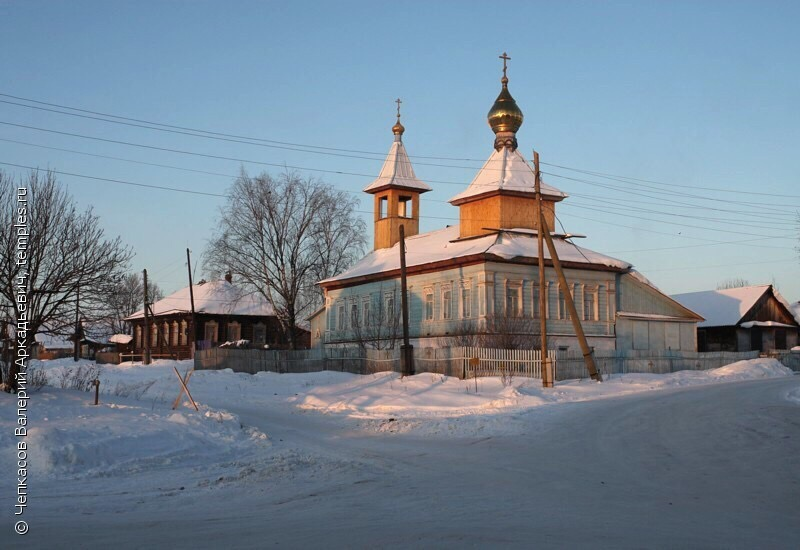
До революции 1917 года, дом принадлежал купцам мясоторговцам Грошевым. В 1920е годы на втором этаже размещалась 2х классная школа. С 1934 по 1958 гг. размещалась МТС. В которой обучались трактористы, в 1935 были пригнаны на территорию первые трактора системы ХТЗ. До 1987 года правление колхоза им.Калинина. С 1988 храм Казанской обжей матери.
Дом Пигасова Василия Филипповича
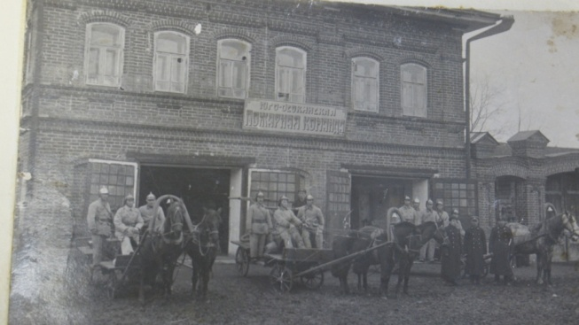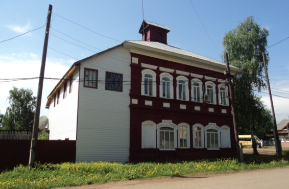
Дом был достроен в начале 20го века. К дому была пристроена торговая лавка. Пигасов В.Ф. торговал обувью галантереей. С 1923 по 1931 гг. в доме размещался сельсовет, затем районная милиция и отдел госбезопасности (ОГПУ). С 1915 года сельисполком (сельсовет). На первом этаже с 1920 по 1935гг. размещался магазин. С 1935 по 1990гг. пожарная часть. С 1994 года сельское отделение полиции (милиции).
Дом построеный купцом-лесопромышленником Павлом Степановичем Жирновым
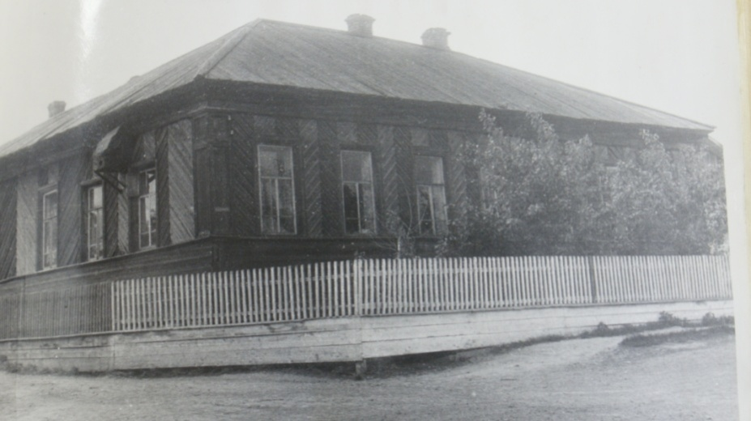
Дом построил для племянника Никиты Никитича Мамлина, примерно в 1870е годы. До революции в доме размещались мастерские купца Суханова по пошиву кожаной обуви. В 1917-1918гг. дом коммуны. Размещалась казарма Юго-Осокинского красногвардейского отряда. После гражданской войны в этом здании находились мастерские по пошиву обуви промартели «Красный луч», позднее быткомбината. В 1986 году размещалась зональная, а за тем сельская библиотека. С 2012 года здание занимает торговый дом «Купец».
Дом Ситникова Степана Петровича
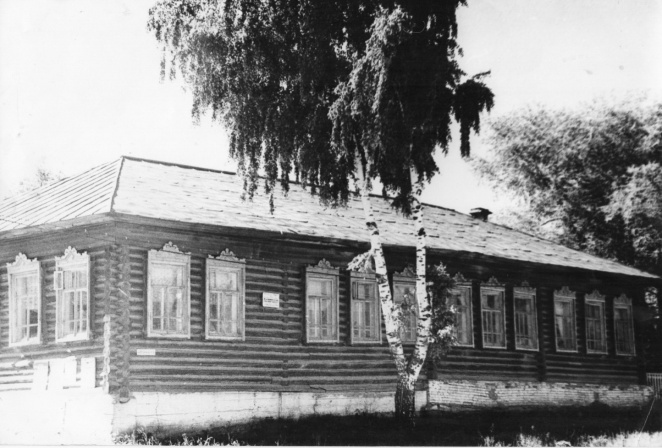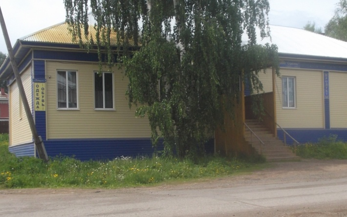
Дом размещался на углу улиц Большой и Закабацкой. В годы войны в здании размещался интернат детского дома, в 60 е годы здание перестроили для начальной школы, 1997году начальную школу перевели в здание по ул. Калинина. Здание продала администрация поселения индивидуальному предпринимателю. Сейчас это магазин «Стрелец». Второй дом, принадлежащий Степану Петровичу, расположен рядом с ДШИ ближе к сельскому парку. Двухэтажный деревянный дом. С 1940х годов в нем располагался интернат детского дома. До 1999 года. С этого времени в нем проживали взрослые воспитанники выпускники детского дома. В 2012 дом переведен в статус жилого многоквартирного дома.